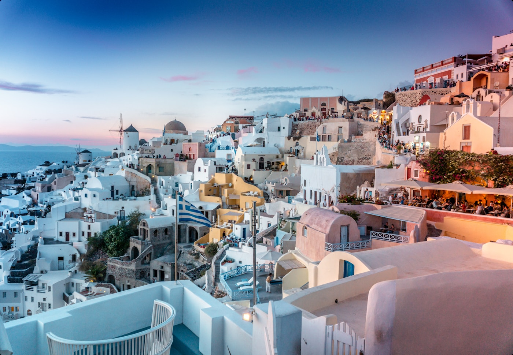
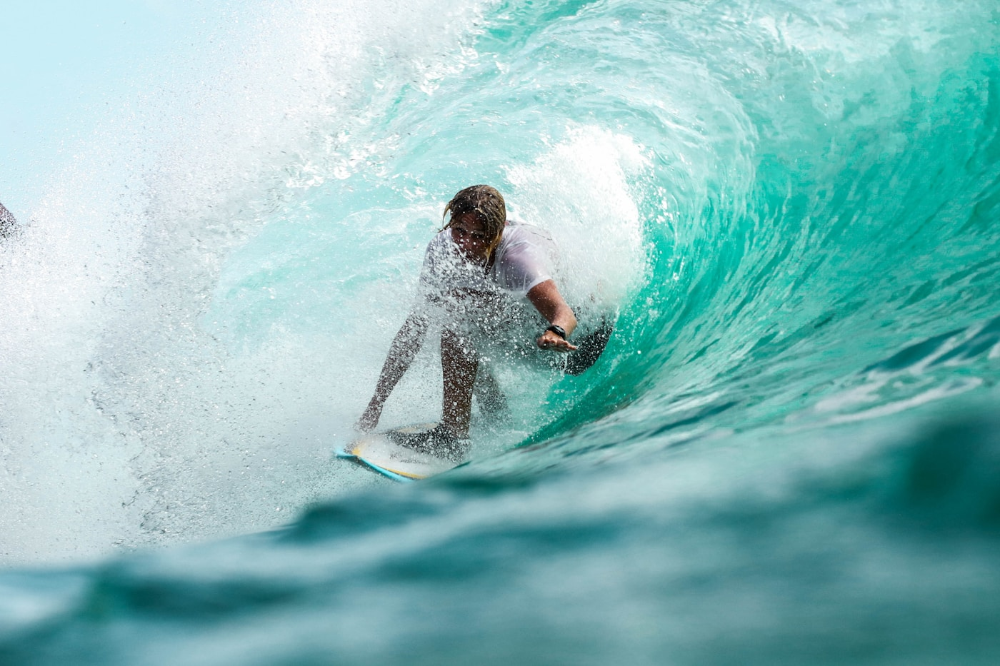

Keywords in this article:
#flotilla sailing #Greek islands #Ionian Sea #slow travel #authentic Greek experience #couples sailing holidayThe Moment Everything Slowed Down
What if the best holiday you ever took had no itinerary, no hotel lobby, and no alarm clock? As someone in my forties looking for a slower and more meaningful way to travel, I felt the warm Greek breeze against my skin as soon as I arrived at the harbour. Standing on the deck, with only the sea and the soft sound of ropes touching the mast around me, my mind became calmer than it had been in weeks. The sea was a mirror, reflecting not just sunlight but everything I had been too busy to notice. At that moment, #flotilla sailing felt like an escape from stress and routine.

A Rhythm Unlike Any Other
Before I booked, I almost cancelled. The idea of navigating open water with no fixed hotel felt more daunting than exciting. However, the experience was completely different from what I expected. Every morning, the lead crew explained the sailing route before we moved towards the next island. That simple, steady structure created calm, comfort, and complete freedom. How often do we give ourselves permission to travel without rushing from one attraction to the next? Reflecting on my own customer journey, from researching routes online to stepping onto the yacht, I realised that flotilla sailing creates reassurance at every stage of the customer experience.
"How often do we give ourselves permission to travel without rushing from one attraction to the next?"
Time Stands Still on the Ionian Sea
One afternoon remains unforgettable. The yacht moved gently through the #Ionian Sea while the sails slowly filled with wind. Around us, there was only blue water, distant islands, and waves following the boat. No traffic. No crowded streets. No constant notifications. I felt as though I could have stayed on that water forever, as if time itself had quietly agreed to slow down. Later, lights from a waterfront taverna appeared beside the harbour. Sitting near the sea with fresh seafood and quiet music made Greece feel alive, not just like a destination on a map. The warmth of Greek hospitality — unhurried, generous, and genuine — felt worlds apart from the rushed atmosphere of many modern resorts.

Strangers Become Sailors
What surprised me most was the connection between people. Although many travellers arrived as strangers, the water naturally brought everyone together. Conversations started easily after long sailing days, especially while sharing stories about hidden beaches and favourite island stops. In many ways, the flotilla became a small floating community moving together between the #Greek islands.
Why Flotilla Sailing Is Different
Researching flotilla sailing and customer journeys helped me understand why this holiday feels different from traditional tourism. Many modern travellers seek more than luxury or beautiful scenery. A growing number of travellers, particularly those in their forties and beyond, free from the demands of family holidays, seek #slow travel — slow mornings, tranquil surroundings, and freedom on their own terms. Not only does flotilla sailing combine adventure and freedom, but it also gives something rarer: the space to be present. What it truly offers is the chance to experience the #authentic Greek experience through small harbours and the serene rhythm of island life. Ready to trade everyday noise for waves and wind? Step aboard, experience this #couples sailing holiday for yourself, and discover the Greek islands the way they were meant to be seen.
"Discover this corner of the Mediterranean the way it was meant to be seen."
Book Your Flotilla Experience →